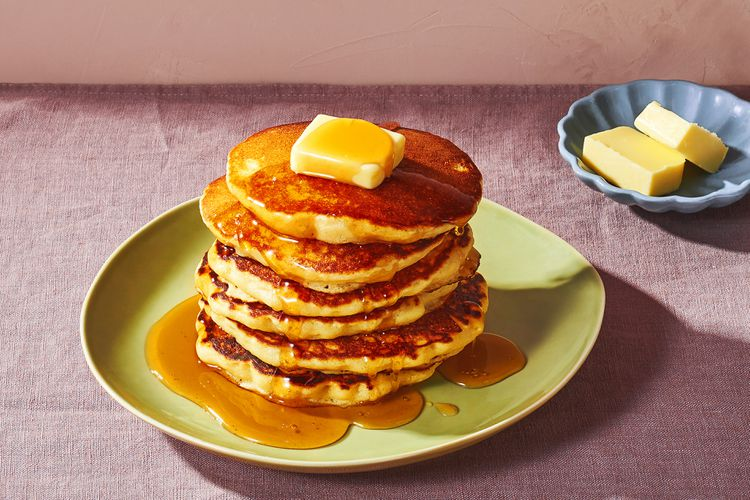

Panckae Recipe

Description
It is a cake like snack which is fluffy and milky in flavor
Ingerdients
- 1 cup all-purpose flour
- 2 tablespoons sugar
- 2 teaspoons baking powder
- 1/2 teaspoon salt
- 1 cup milk
- 2 tablespoons unsalted butter, melted, or vegetable oil
- 1 large egg
- 1 tablespoon vegetable oil
- Assorted toppings, such as butter, maple syrup
Steps
- Preheat oven to 200°F. Have a baking sheet or heatproof platter ready to
keep cooked pancakes warm in the oven.
- In a small bowl, whisk together flour, sugar, baking powder, and salt; set aside.
- In a medium bowl, whisk together milk, butter (or oil), and egg.
- Add dry ingredients to milk mixture; whisk until just moistened
- Heat a large skillet (nonstick or cast-iron) or griddle over medium
- For each pancake, spoon 2 to 3 tablespoons of batter onto skillet, using the back of the spoon to spread batter into a round
- Cook until surface of pancakes have some bubbles and a few have burst, 1 to 2 minutes.
- Flip carefully with a thin spatula, and cook until browned on the underside, 1 to 2 minutes more.
- Serve immediately, or keep warm in oven